Keeping People in Computing
The idea of people being front-and-center of computation, and thus technology, once held sway but has often been in danger from a wider technocracy. Here I want to focus on what "people's computing" in the broad strokes was.
An Implied Ontology
The concept of "people's computing" as an implied ontology, rather than a concrete historical era, introduces a specific perspective. Ontologically, it suggests that categorizing a particular period as "people's computing" is a construct we apply retrospectively to encapsulate shared values, practices, and attitudes.
By acknowledging the constructed nature of this era, I mean to highlight the interpretive aspect of historical demarcation explicitly. It's not a predefined, objectively existing period but a lens through which we view and define a particular time slice. This approach aligns with the understanding that historical narratives are shaped by historians acting, in part, as storytellers, and the identification of distinct eras involves a certain level of subjectivity and interpretation.
My emphasis on the implied ontology is hopefully prompting my readers to consider the fluidity of historical categorizations and the importance of recognizing our role in shaping the narrative. I hope this provides a nuanced perspective that encourages a critical reflection on how we conceptualize and frame historical periods, particularly in the realm of technology and computing.
I hope my focus on "people's computing" and the shift from a time when individuals were at the forefront of computation to the potential overshadowing by a broader technocracy is a compelling and relevant narrative thread. It speaks to the changing dynamics between people and technology over time.
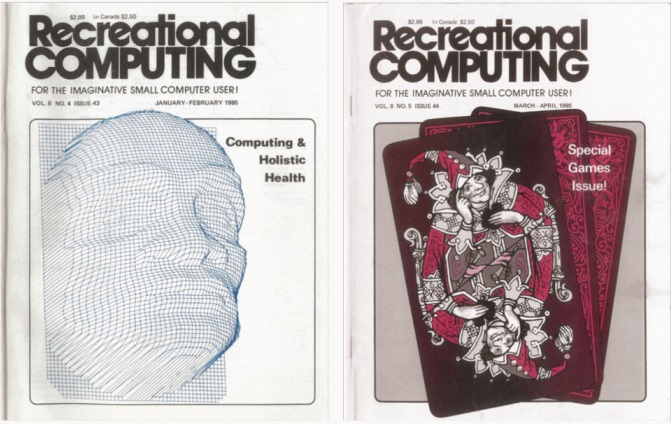
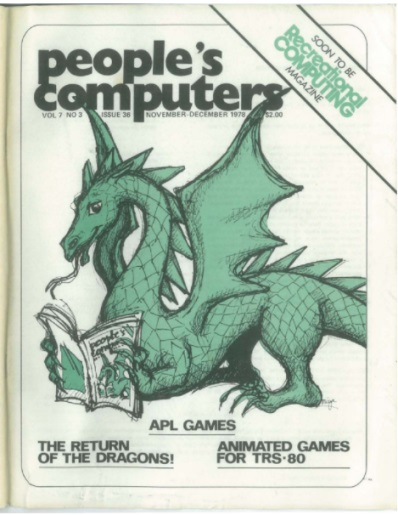
The notion of "people's computing" — during the 1965 to 1975 period — championed by groups like the People's Computer Center and figures like Bob Albrecht, serves as a poignant reminder of a time when the democratization of not just technology but computing was a driving force. It reflects a period when individuals, particularly students, were actively engaged in computing, using tools like BASIC to demystify and make technology accessible.
I intend to delve into what "people's computing" was in broad strokes to explore the ethos and principles that characterized this era. This approach captures a historical moment and sets the stage for reflecting on the implications of a potential shift towards a more technocratic perspective.
The Crucial Intersection
The basis for much of my Ludic Historian content is that I've extensively researched gaming history, particularly the distinctions between ludology and narratology. As I embarked on much of that research, I found an exciting starting point around where computing and education intersected. Here we see a young High School student in 1962:
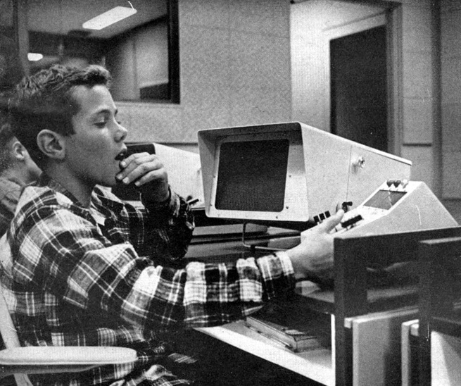
Here we have a group of younger children in 1967:
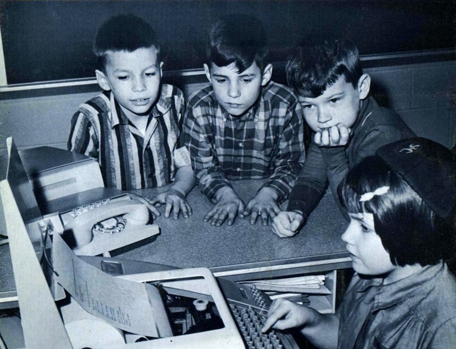
In the April-June 2014 issue of IEEE Annals of the History of Computing, Joy Rankin wrote an article called "Toward a History of Social Computing: Children, Classrooms, Campuses, and Communities," and she says:
I must underscore the methodological value of studying systems that originated in an educational context. Because many of the project publications were oriented toward readers in education, they often included meticulous details of users' encounters with the terminal, the language, the lessons, the appropriate syntax, and similar issues. These reports documented knowledge and practices that otherwise would have been tacit and unnoticed. Such descriptions are immensely helpful for historians seeking to understand and describe novel computing experiences.
I entirely agree! This intersection provided a fertile ground for the development of computer games and artificial intelligence, the latter of which was often used with and against the former to determine its viability and actuality.
Here, by way of example, we have Arthur Samuel, in 1959, who published an algorithm for a checkers program using artificial intelligence.
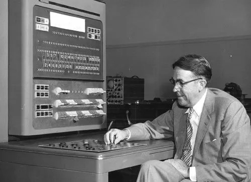
What I think is very interesting is that while gaming saw a great deal of experimentation because it became democratized — due to the democratization of computing — there was less of this with artificial intelligence. The latter was not as democratized, and limited democratization meant that experimentation primarily occurred within the realms of researchers or academics.
Thus, people, in the broad sense, were front-and-center with gaming-as-computation and very much in the background with AI-as-computation. How ludology and narratology influenced that, even though the terms were not yet in use, is something best covered by example. I will show some of those examples in various other articles. For now, I want to dig into history and look at how humans and technology intersected at pivotal moments.
A Historical Pivot Point
A very crucial moment in the microelectronic revolution, which eventually led to computing becoming accessible to many people, was the launch of the Sputnik satellite on 4 October 1957 by the Soviet Union.
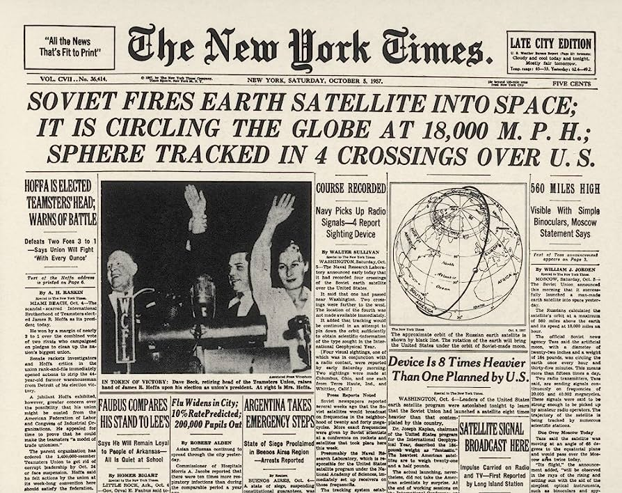
In the United States, the launch of Sputnik provided the impetus for administrators and educators to reconsider American education.
The government and the broader research and educational establishment felt a "space race" was coming — or, more broadly, a technology race — and thus, American education had to prepare its youth for that. Better schooling was required, particularly around math and science.
Computing in Education
In September 1958, the United States Congress passed the National Defense Education Act.
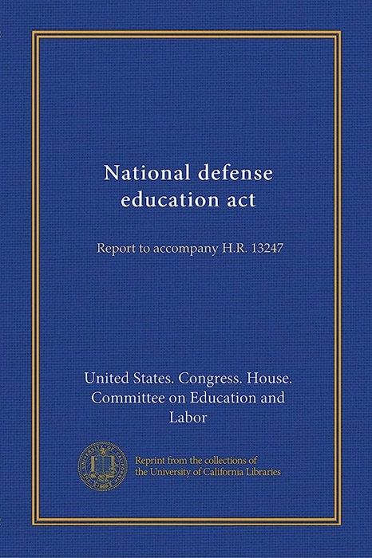
It was not exactly riveting reading, but it provided funds to improve teaching, with an emphasis on teaching science and mathematics. The federal government thus made money available for "innovative approaches" to education. A primary focus of innovation in this context was using technology in the classroom.
Money supplied by the government and private institutions like the Carnegie and Ford Foundations made it possible during the early 1960s for schools to experiment with new and innovative educational methods around technology. Not surprisingly, this impetus for adding technology into schools had a direct impact on the history of computing.
A Mythology Formed
If you investigate this history, you will generally encounter persistent mythology in computing. That mythology is that computing went directly from a type of priesthood or elite mainframe computing model to the liberation from this by the so-called "homebrew hobbyists."
These hobbyists were non-professionals who "worked out of their garage" — hence the "homebrew" — and ultimately gave us personal computers, one entry point being the kit-based Altair in 1975 to the 1977 "trinity" of the Commodore PET, Apple II, and TRS-80.
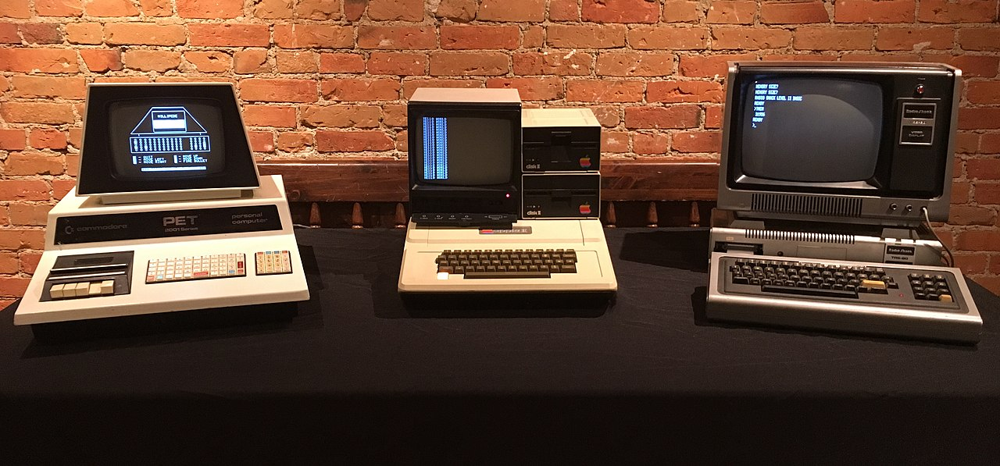
Usually, the Commodore and TRS-80 are left out of the mythology by chroniclers, and they seemingly assume that Apple was solely responsible for carrying the world into a new golden age, which is the view they consciously or unconsciously promote.
This evolution, promoted by the mythology, eventually led into the early 1980s with the IBM PC and its various clones. Those developments ultimately led to diversification in the 1990s as the "World Wide Web" became the face of the existing Internet.
So, the general form of the mythology is that we had corporate/institutional computing, and then we had personal computing. And the shift between those computing modes was dramatic and instituted by relatively few people. And these were "special" people who became "big names," such as Bill Gates and Steve Jobs.
Yet, in between those institutional and personal computing contexts, we had what we might want to call "people's computing." This computing mode is a part of the history — and a considerable part — that often gets entirely dismissed, assuming it's even known about at all.
This people's computing era is the crucible era that I referred to in my Computing and Crucible Eras article. There was a decade, from 1965 to 1975, where students, educators, and enthusiasts — ordinary people and not "big names" — created personal and social computing before personal computers or the broadly public and accessible Internet became available. At that time, the newly emerging people-focused computing access moved in lockstep with network access via time-shared systems.
Sharing Time
Time-shared systems saw their most vibrant use in the context of educational institutions. What thus happened was the technology context combined with the education context, which meant that primary (K-12) schools, high schools, colleges, and universities became sites of technological innovation during the 1960s and 1970s.
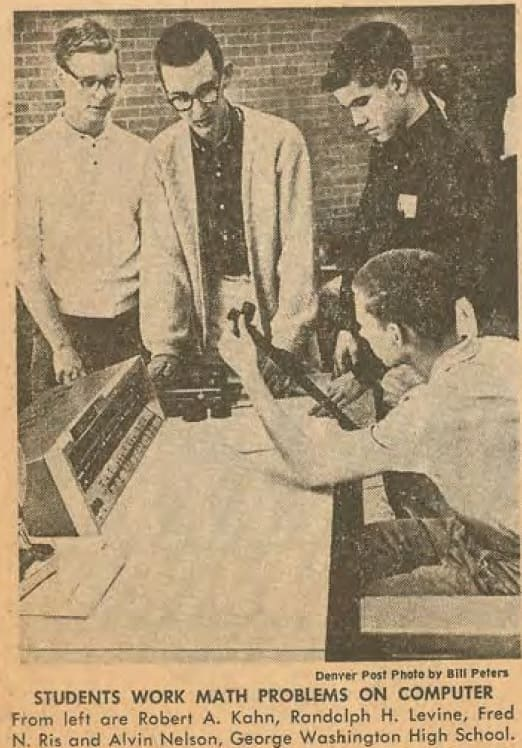
Students and educators were the ones who built and used academic computing networks, which were, at this time, facilitated by that new type of computing called time-sharing.
Time-sharing was a form of networked computing that relied on computing terminals connected to some central computer via telephone lines. Those terminals were located in the supremely social settings of middle school classrooms, college dorm rooms, and university computing labs. Acting as communal institutions, these schools and universities enabled access to and participation in these systems. This access was supported by eager state governments as well as the National Science Foundation.
If you're interested in details about this history, I highly recommend John Markoff's What the Dormouse Said: How the Sixties Counterculture Shaped the Personal Computer Industry. Also worth reading is Joy Lisi Rankin's A People's History of Computing in the United States and Bob Johnstone's Never Mind the Laptops: Kids, Computers, and the Transformation of Learning.
Shared Working and Shared Work
Collective access to a social, communal resource meant the possibility of storage on a central computer into which all terminals connected. This connectivity meant users could share useful and enjoyable programs across the network. The use of simulations and games often provided the "enjoyable" part. These were obviously very interesting to young students, regardless of their age or skill level. And these simulations and games, more than anything else, led to a democratization of computing.
Keep in mind that, by design, time-sharing networks accommodated multiple users. Multiple users meant more possibilities for cooperation, community, and communication, which, in turn, allowed for a great deal of experimentation, collaboration, innovation, and inspiration. A key focus there is on experimentation. The democratization of computing is what led to that experimentation.
Advocates of 1960s and 1970s time-sharing networks often shared the belief that computing, information, and knowledge were becoming increasingly crucial to American economic and social success. That viewpoint was related to another, more all-encompassing view: computing would be essential to what many perceived as an emerging "knowledge society." Time Magazine from April 1965 considered this idea a bit.
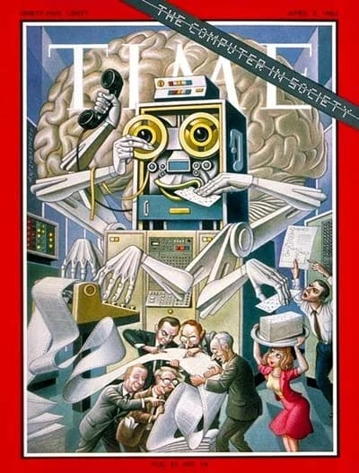
Such a society would undoubtedly be predicated on the sharing of knowledge. Thus, computing would have to be an essential part of storing that knowledge and ensuring it was appropriately democratized. Fostering those viewpoints and practices was another way that the technology and education contexts were aligning because it was perceived that the upcoming generation would be the one to capitalize on these grand visions.
It's worth noting that artificial intelligence was not part of this overall focus at all. It's not that it wasn't known about necessarily; rather, its application and use to a broader public was barely considered. A good book that traces a lot of thought on the subject via numerous essays is AI Narratives: A History of Imaginative Thinking about Intelligent Machines.
In this historical context, people began discussing the possibility of a national computing network. This network would be comparable to the national telephone or electrical grid.
Brief History of National Networks
I want to briefly look at the context for that national service because their context helps us understand how computing could be aligned with such an idea. The development of the national telephone network in the United States has an interesting historical backdrop. In 1878, the first telephone exchange was established in New Haven, Connecticut, but the real growth started in the 1880s. By the late nineteenth century, major cities were interconnected, and the long-distance network began to take shape.
In 1913, the first transcontinental telephone call was made, marking a significant milestone. However, it wasn't until the mid-twentieth century that a genuinely nationwide network emerged with the advent of direct long-distance dialing in the 1950s.
The development of the national electrical grid in the United States is another fascinating historical journey. The initial electric power systems emerged in the late nineteenth century. Thomas Edison's Pearl Street Station in New York City, operational in 1882, is often considered one of the first central power stations.
The idea of interconnected power systems began to take shape in the early twentieth century. The Federal Power Act of 1920 provided a legal foundation for regulating interstate electricity transmission. The Tennessee Valley Authority, established in 1933 as part of the New Deal enacted by President Franklin Roosevelt, was a significant step toward regional electrification. It wasn't until the 1950s and 1960s that the modern national electrical grid started to form. The development of high-voltage transmission lines and the interconnection of regional grids largely facilitated this.
So we see here that by the mid-20th century, the United States had a more cohesive and interconnected electrical grid, ensuring a reliable supply of electricity across the nation and a well-developed national telephone system, facilitating communication on a broad scale. These infrastructural developments were crucial for the country's socio-economic growth and technological advancement during that period.
It's apt to describe this timeframe as a period of the commoditization of power and communication. Both electricity and telephone services became increasingly standardized, accessible, and essential for individuals and businesses. The widespread availability and reliance on these services contributed to a sense of them being commodities — essential, widely available goods that form the backbone of modern life. This was the context in which computing would eventually be considered.
Computing as Commodity
During the 1960s, those focused on academics and those focused on business grew increasingly interested in — and evangelical about — this idea of a national computing utility. Perhaps even multiple such computing utilities. The idea was that computing services would be delivered across the United States over time-sharing networks. Entire businesses were launched to realize this particular vision. That vision was a world in which all Americans benefited from computing access in their homes and workplaces, just as Americans benefited from the comparable national utilities of water, electricity, and telephone service.
Technology had to enable all of these grand visions, of course, and, for a time, there was a symbiotic relationship with the minicomputer marketplace, which provided a lower-cost alternative to costly and huge mainframes. Those mainframes were computing solutions that schools often couldn't afford. It was minicomputers that the terminals at various schools connected to with their different access methods, such as teletype terminals.
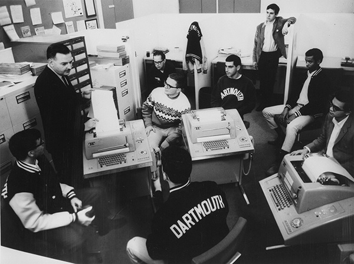
Minicomputer manufacturers, like the Digital Equipment Corporation and Hewlett Packard, monetized their support of educational materials to sell their machines, further aligning the technological with academic interests.
A Computing Ecosystem Formed
I hope you see that the histories of educational institutions and technology companies are woven together but still distinct. They certainly had areas where their interests aligned but also, of course, had particular interests they worked toward. It was the educational aspects, however, that would give rise to the idea of people's computing, with the technology companies figuring out not only how to be enablers of that but how to make as much money as they could doing so.
The early, more localized networks collectively embodied the desire for computer resource sharing. In an education context, this immediately situated itself around a community of interested individuals joined by computing networks. The desire was for a form of communal computing that could be extended beyond the education context. That "beyond the education context" impetus propelled the push for the national computing utility I mentioned earlier and the promise of a nation of computing citizens. This impetus further allowed for the idea of computing being brought into the home and thus becoming more "personal."
A Broad Focus for Computing
Let's consider the broad sweep of the history we discussed as it developed. We ended up with educational computing enthusiasts like Noble Gividen, Bob Albrecht, and David Ahl, who did a massive amount of work around introducing computing to young students. Various computing projects within education started, such as Project SOLO, Project LOCAL, and the Huntington Project.
Those projects allowed for the work of the enthusiasts and their students to be shared in various newsletters and periodicals. There were also education initiatives such as the Board of Cooperative Educational Services (BOCES), Total Information for Educational Systems (TIES), and the Minnesota Educational Computing Consortium (MECC).
For those who know their gaming history, BOCES is what led to The Sumerian Game, which ultimately provided the basis for all Hammurabi variants. TIES and MECC are the contexts in which The Oregon Trail proliferated.
As all of this democratization and experimentation occurred, some people began to build hobbies around the new technology, and, eventually, some people started to make careers around the latest technology. That gradual shift could not have happened without the experimentation that was enabled by the democratization mentioned earlier.
All of this forged a crucial link between the computer — and thus computing — and its larger social and economic environment. This, in turn, led to different technical communities and distinctive subcultures and, therefore, varying ecosystems. And that, in turn, led to discussions about the relationship between science and craft in engineering practice, both hardware and software. Those communities, subcultures, and discussions eventually led to hardware being a consumer technology and software being a commercial industry.
We thus eventually saw the rise of an information economy serving as the backbone of an information society. Time Magazine recognized that in its February 1978 issue.
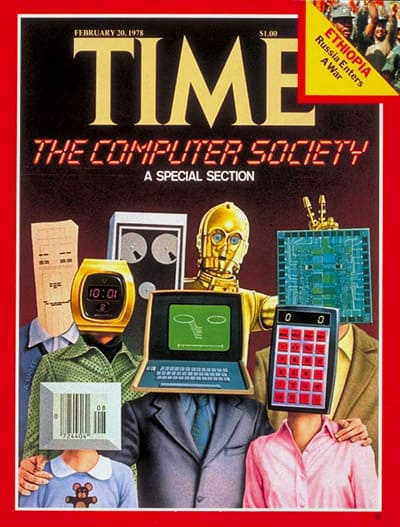
Yet, notice how the focus shifted. We were apparently a "computer society" versus the "knowledge society" that was originally envisioned. The technocracy had already started to shift the dynamic.
In this "computer society," games and gaming have proved to be a staggering multi-billion dollar industry that easily outpaces all other forms of entertainment at the time of writing this. And, to be sure, there were various forays into artificial intelligence, most of which led to so-called "AI winters."
The concept of AI winters gained prominence after the initial excitement and high expectations in the late 1950s and early 1960s, followed by periods of reduced enthusiasm and funding due to challenges and limitations in research around artificial intelligence. The first AI winter occurred in the 1970s, and another, more prolonged one, happened in the late 1980s to the early 1990s.
Yet here we are now, as I write this, seeing yet another major foray into artificial intelligence and its broad dissemination across various industries. That means we see much more experimentation and, thus, the possible democratization I mentioned previously. The intersection of artificial intelligence with gaming and simulations has accelerated once again.
The Historical Broad Stroke
Here's where my initial historical forays led me: in the late 1950s, computers were remote, inaccessible, and unfamiliar to pretty much everyone. Speaking of the United States, there were approximately six thousand computer installations, and those tended to cluster in military, business, and research-focused university settings. Computing was focused on the academic, industrial, and military. Individual access to computing was extremely rare.
As per the broad history I recounted above, computers would start to spread from military and university installations through factories and offices and, eventually, into the home.
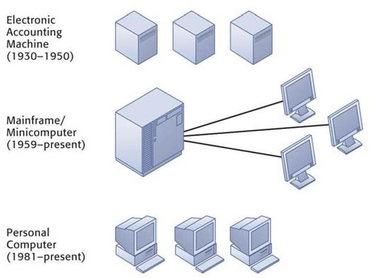
But all that took a little bit of time. In between that time — between, that is, institutional/corporate computing and personal computing — there was a fascinating emergence of people's computing. And a lot of that people's computing was driven by a focus on simulation and games and, to a lesser extent, artificial intelligence.
Nathan Ensmenger wrote an article called "Power to the People: Toward a Social History of Computing" in the January-March 2004 issue of IEEE Annals of the History of Computing where he said:
The future of the history of computing is not machines, but people.
Indeed, and the same can be said of the past.
In the April-June 2014 issue of that same journal, Joy Rankin, in her article "Toward a History of Social Computing: Children, Classrooms, Campuses, and Communities" said:
We historians have only begun to address how people made computing ubiquitous.
Exactly right. And that's a focus I want to continue on.